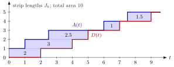

Little's Law¶
Theorem¶
Consider an input-output system that jobs enter at times and leave at times , with sojourn times and number in system . If the system is rate-stable with , and the arrival-average sojourn time
exists and is finite, then the time-average number in the system exists and
Interpretation¶
The average number of things in a system equals the rate at which they enter times the average time each one stays. On a km highway where one car enters per minute and every car drives at km/h, each car spends minutes on the road, so on average cars are on it.

The figure shows the five jobs of Example 2. The blue step function counts arrivals and the red one counts departures; their vertical distance is . Job fills a horizontal strip of height one from to , so the strip has length . The area between the curves can be added up vertically, , or horizontally, ; both equal job-minutes.
The proof charges each job for its time in the system, which gives . Dividing by , the two bounds tend to and , which coincide by rate stability. Both assumptions matter: without the bounds differ, and rate stability alone does not make finite.
The law links a time average () to an arrival average (), and it applies to any part of the system with its own entry rate and residence time: the queue gives , the servers give . Units are a quick check: jobs equal jobs per minute times minutes, so cannot be right. The law concerns long-run averages; it does not say how long it takes to clear a given queue.
Key Results¶
- under rate stability and a finite average sojourn time (Theorem 4.4.1); the time average exists as a consequence.
- Applied to the waiting room: , with the waiting time.
- Applied to the servers of a stable queue: the time-average number of busy servers is (Ex 4.4.6); for one server this is the busy fraction (TF 4.4.3), in line with server utilization.
- Rate stability is not enough on its own: with and when is a square and otherwise, , but and the time average is infinite.
- The identity holds only at times when the system is empty (TF 4.4.2).
- Combined with PASTA and the memoryless service times, which give ((4.5.4c)), the law gives the results and .
Examples¶
1. Highway. One car per minute enters a km road and drives at km/h, so per minute and hours minutes. Hence cars. If each car drives at km/h, the number on the road halves to .
2. Five jobs. Jobs arrive at minutes and leave at , so and the average sojourn time is minutes. Over the arrival rate is per minute, and , which is exactly the time-average number , because the system is empty at and at .
3. Busy servers. Patients arrive at a clinic at per hour and each consultation takes on average minutes hours. In the long run the average number of doctors busy is , whatever the number of doctors on duty and whatever the distributions.
4. A system that is not in balance. Suppose a country has million inhabitants with expected lifetime years. Little's law gives an entry rate of million births per year, about per week if a year has weeks, and in a population of constant size the deaths would match this. The observed death rate is about per week (Ex 4.4.7). The population grows, so births exceed deaths and the long-run balance behind the law fails over this period. In a simple model where everyone lives exactly years and the population grows by a year, the average cohort is times the cohort now dying, so deaths are about per week, much closer to the observed figure.
Prerequisites¶
- Rate Stability
- Sojourn Time
- Time-Average Performance
- Arrival-Average Performance
- Queue-Length Conservation
Related Concepts¶
- Renewal Reward Theorem
- Poisson Arrivals See Time Averages
- Server Utilization
- Waiting Time
- M/M/1 Queue
- M/M/c Queue
- Mean Value Analysis
Sources¶
- Stochastic Operations Research · Week 4
- N. D. van Foreest, Sample Path Analysis and Simulation of Stochastic Systems, Section 4.4
Aliases: Little's formula, Little's theorem, L = lambda W, L = λJ, Littles law Keywords: \mathbb{E}[L] = \lambda \mathbb{E}[J], \mathbb{E}[Q] = \lambda \mathbb{E}[W], \mathbb{E}[L_s] = \lambda \mathbb{E}[S], sojourn time, throughput, work in progress, average number in system, input-output system Symbols: delta, element of, infinity, integral, lambda, rho, square root, sum
Last updated: 29 October 2026 20:42
Little's LawBatch-Arrival Waiting TimeClosed Queueing NetworkCONWIPM/M/1/K QueueM/M/1 QueueM/M/c QueueM/M/Infinity QueueMean Value AnalysisOpen Queueing NetworkPollaczek-Khinchine FormulaVisit RatioRate StabilitySojourn TimeTime-Average PerformanceArrival-Average PerformanceQueue-Length ConservationRenewal Reward TheoremPoisson Arrivals See Time AveragesServer UtilizationWaiting Time